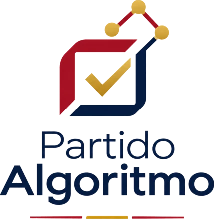

Datos sin sesgos, futuro sin disputas.
Tomamos las decisiones importantes con el análisis de un consejo de expertos independientes e inteligencia artificial. Y las votamos entre todos.
Quiero participar Partido en proceso de constituciónCómo decidimos
-
Datos
Partimos de datos públicos y verificables, no de consignas.
-
Análisis
Un consejo de expertos independientes y herramientas de IA estudian cada cuestión y proponen alternativas, con sus costes y efectos.
-
Decisión
La afiliación y los órganos del partido debaten y votan. La última palabra es siempre de las personas.
Publicamos las fuentes, los análisis y el resultado de cada votación.
Por qué
Demasiadas decisiones públicas se toman por ideología, por encuestas o por cálculo electoral. Creemos que el rumbo de un país merece otro método: mirar la evidencia, escuchar a quien sabe y decidir juntos.